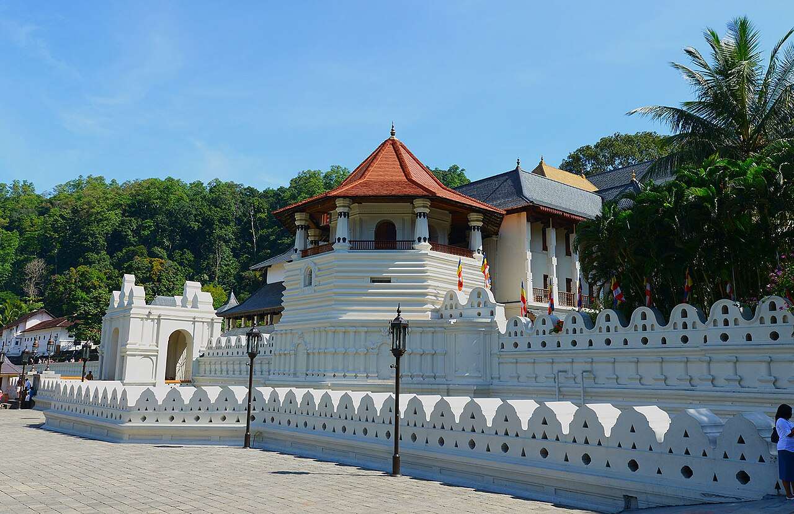
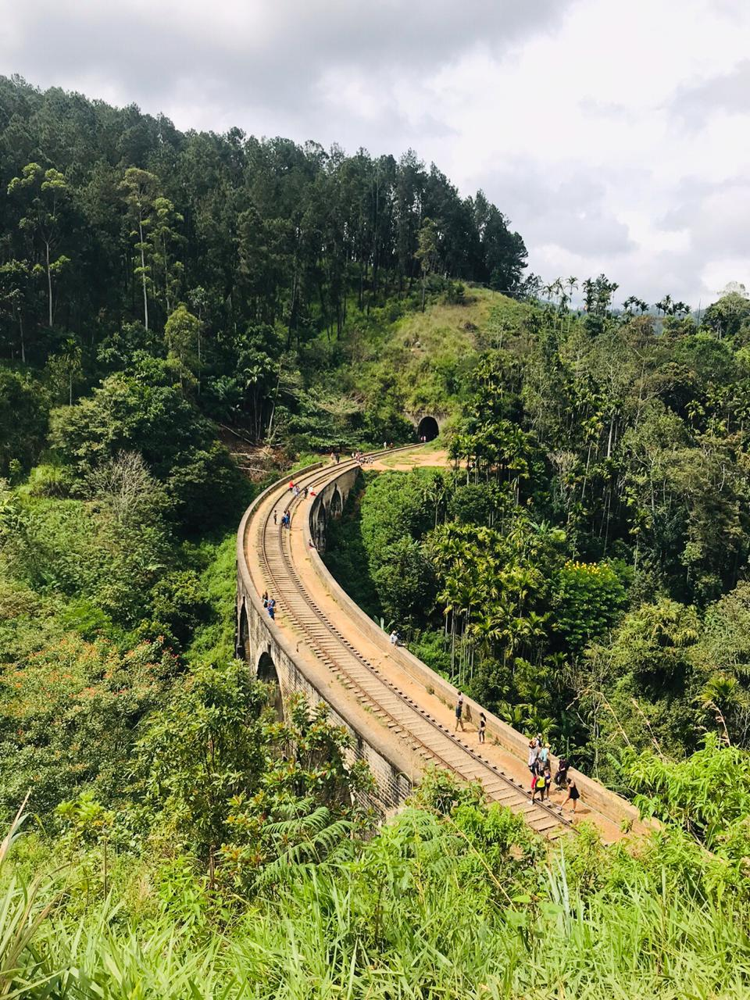
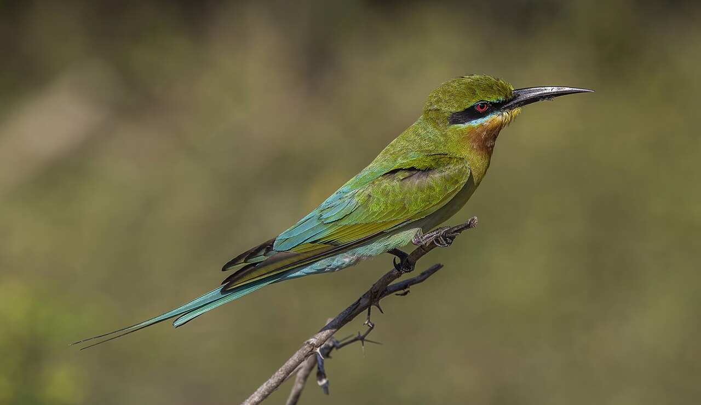
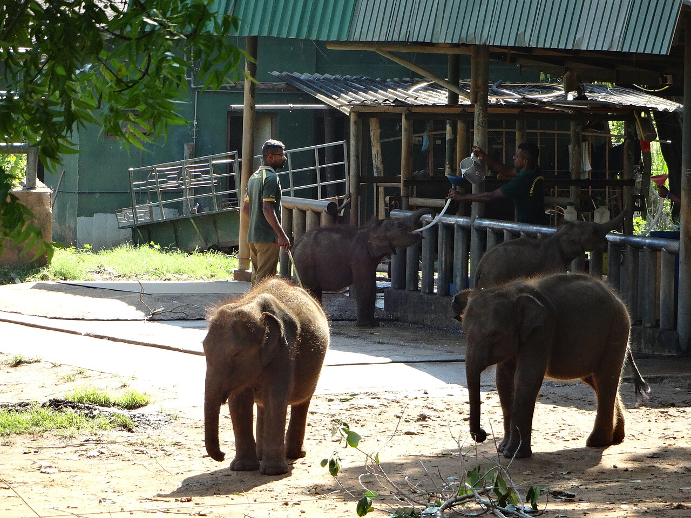
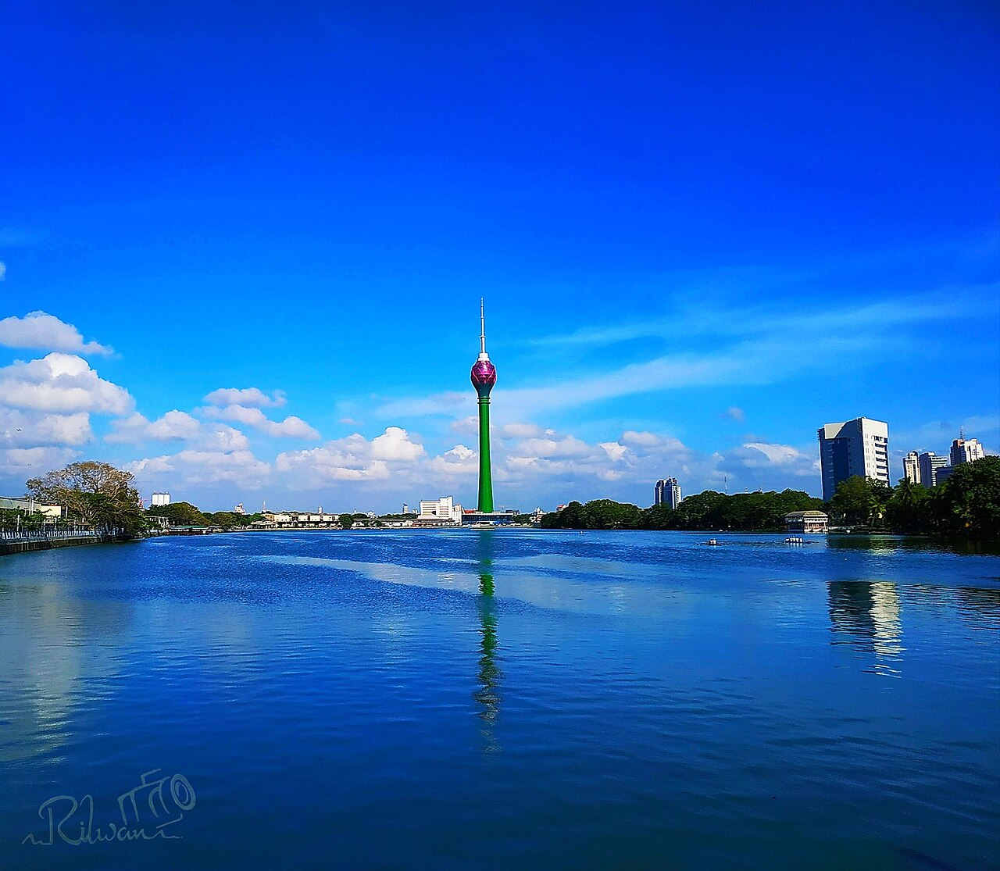
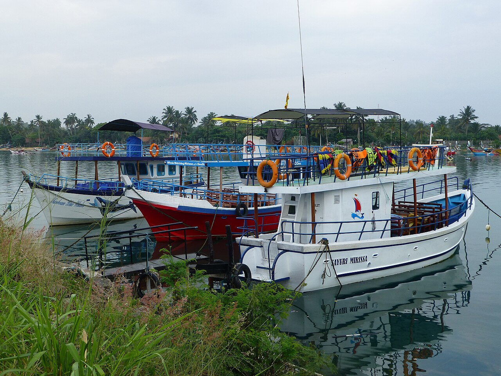

Handpicked Day Adventures
One-Day Sri Lanka Excursions
Perfect day tours departing from Colombo, Negombo, Kandy, or coastal beach resorts. Travel in private, climate-controlled comfort with dedicated personal guidance.
Perfect day tours departing from Colombo, Negombo, Kandy, or coastal beach resorts. Travel in private, climate-controlled comfort with dedicated personal guidance.
Each day tour is customizable to match your hotel pickup location and schedule.
 Full Day (10-12 hrs)
Full Day (10-12 hrs)

Full Day (8-10 hrs)
Full Day (8-9 hrs)

Full Day (10-12 hrs)
Full Day (10-12 hrs)
Full Day (9-11 hrs)
Half/Full Day (6-8 hrs) Full Day (7-8 hrs)
Full Day (7-8 hrs)
 Full Day (10-12 hrs)
Full Day (10-12 hrs)

Early Morning (5-6 hrs)Your Personal Sri Lanka Travel Assistant